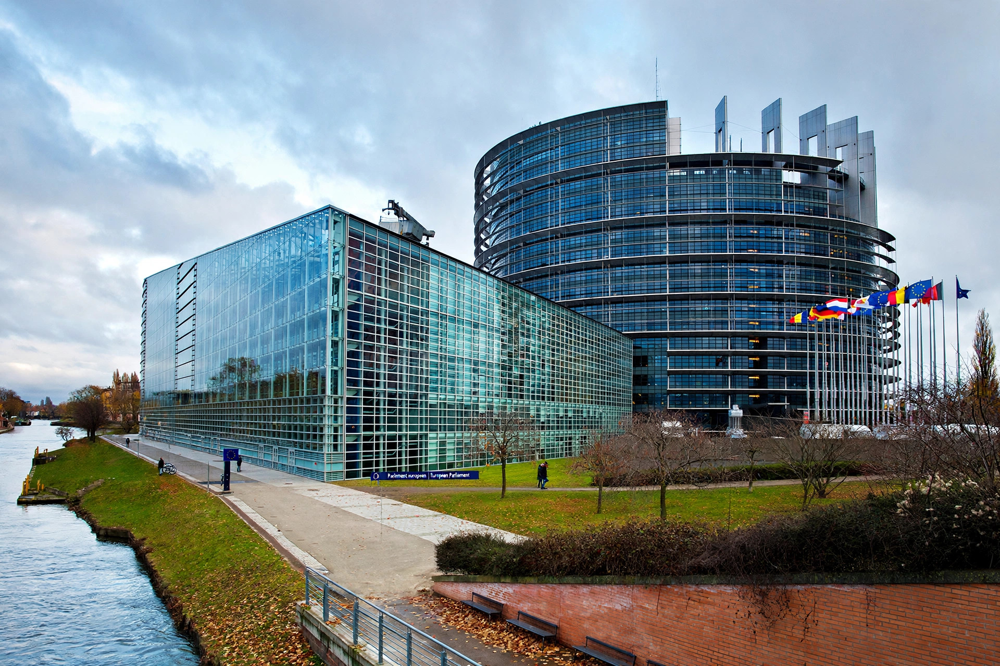

The European Ombudsman is an interinstitutional body of the European Union that holds the EU's institutions, bodies, offices and agencies to account. The Ombudsman investigates complaints about maladministration in the institutions and bodies of the European Union, acting impartially and independently.

The European Parliament building in Strasbourg.
The office was created by the Treaty of Maastricht (1992) and the first Ombudsman, Jacob Söderman of Finland, took office in 1995. The Ombudsman is elected by the European Parliament after each parliamentary election, for a renewable term of five years. Any citizen of the Union, and any natural or legal person residing or having a registered office in a member state, may complain to the Ombudsman — free of charge and in any of the EU's official languages.
The Ombudsman can inspect documents, hear officials, and open own-initiative inquiries into systemic problems. Typical complaints concern lack of transparency (refusal of access to documents), procedural errors, unfairness, discrimination, and delays in handling grants, contracts, or recruitment. Findings are not legally binding, but institutions comply with the Ombudsman's recommendations in the great majority of cases; where they do not, the Ombudsman may make a special report to the European Parliament. The Ombudsman cannot investigate national or local administrations of the member states, nor the Court of Justice acting in its judicial role.
Official publications and annual reports of the European Ombudsman.